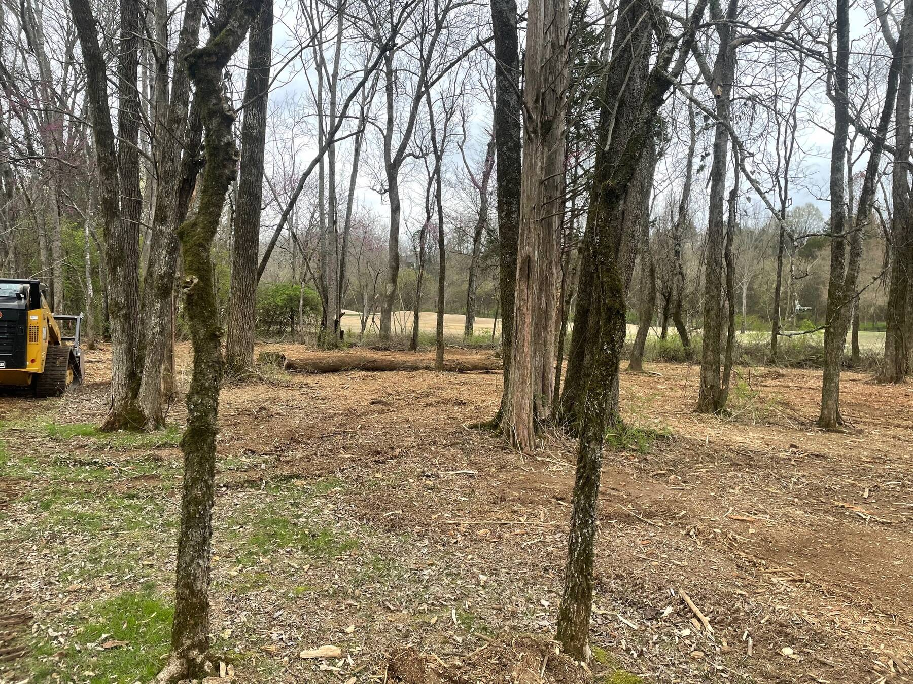

Land clearing companies provide a valuable service by improving the look of undeveloped properties. However, before hiring someone to remove trees, brush, and weeds, you should take time to ask questions. It’s important for both parties to be on the same page to help prevent disputes and miscommunication.
When narrowing down your options for land clearing services, here are some of the questions you should ask.
Do You Provide Cost Estimates and Contract Parameters in Writing?
One of the best tips for choosing land clearing companies is to hire only those that provide a written cost estimate. After choosing a company, make sure you sign a written contract that outlines the work to be done, cost, payment schedule, and other important details. This will help prevent any problems in the future.
If a company refuses to provide an estimate and contract in writing, this is a red flag. Contracts keep both sides in the loop during the land clearing process and reduce the risk of errors and disagreements.
Although some companies might prefer to work with a handshake and a verbal agreement, written contracts protect both parties.
How Do You Handle Add-on Costs?
Ask the lot-clearing professionals how they handle unexpected issues that arise during the job. If the complication would generate an add-on cost for your project, you should know ahead of time how the company will handle it. Some companies don’t pass these costs on to the property owner, while others will specify in the written contract that your job might be subject to add-on costs.
Will You Provide an Estimated Timeline for Completing the Work?
When preparing a parcel for a new purpose, you may have deadlines you need to meet. The land clearing company should provide you with a completion date, which will allow you to schedule other workers to begin the next phase. If the company misses the deadline, will they offer some sort of discount?
Do You Have Safety Protections and Insurance in Place?
Professional property-clearing companies should be able to explain their safety procedures. How will they keep buildings and other property safe during land clearing? What equipment do they use to make sure tree removal goes smoothly? Does the company have an insurance policy that protects you from financial liability in case of an accident?
Have You Cleared Properties Similar to Mine in the Past?
Companies without experience clearing properties like yours may struggle to complete the job within the desired timeline and to your satisfaction. Experience with heavy-duty equipment and the removal of thick trees and brush increases the likelihood of a successful land clearing project.
Will You Communicate With Me About Changes and Complications?
One of the key considerations for land clearing services is ensuring you receive regular updates on the progress of the work. If the property-clearing professionals encounter problems during the work, they should notify you immediately. Honest and prompt communication is especially important if the issues may affect the timeline or final cost.
The company doesn’t have to let you know every time its equipment gets temporarily stuck in mud, but it should promise to keep you updated on major issues and milestones.
What Is the Expectation for Receiving Payment for Your Services?
Always ask how the company handles billing and payments. You may want to take a final walk-through at the property before agreeing to make a payment. Some companies request partial payment as a deposit to hold your appointment time. You could then pay the remaining balance on a 30-day invoice.
The payment terms should be part of the written contract you’ll sign at the start of the project.
Do You Provide a Guarantee of the Results?
Ask the land clearing company how it guarantees your satisfaction with the final result. What is the course of action if you aren’t satisfied with the quality of the work? You should have the right to ask for certain areas of the land to be reworked if you don’t believe the initial results will meet your needs. Your rights regarding guarantees should be included in the written contract for the job.
Discuss Your Project With the Experts at The Yard Force Today
At The Yard Force, we discuss your plans for the property before we begin work. We’ll explain our processes and why our level of expertise and skill with the equipment will give you results that fit perfectly with your plans. We take the time to answer any questions you may have.
Hiring a local land clearing contractor is easy when your first call is to The Yard Force. Simply use our online contact form or call us today at (865) 290-8815 to get a free quote. We serve the entire region from our base of operations in Knoxville, TN.